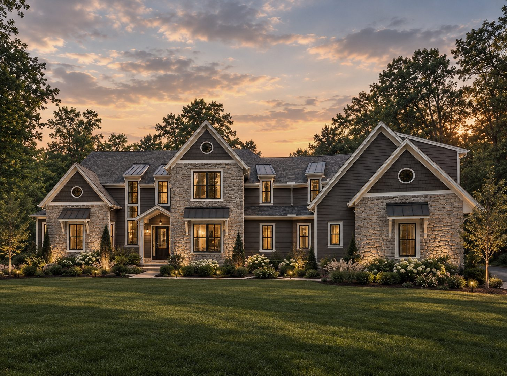
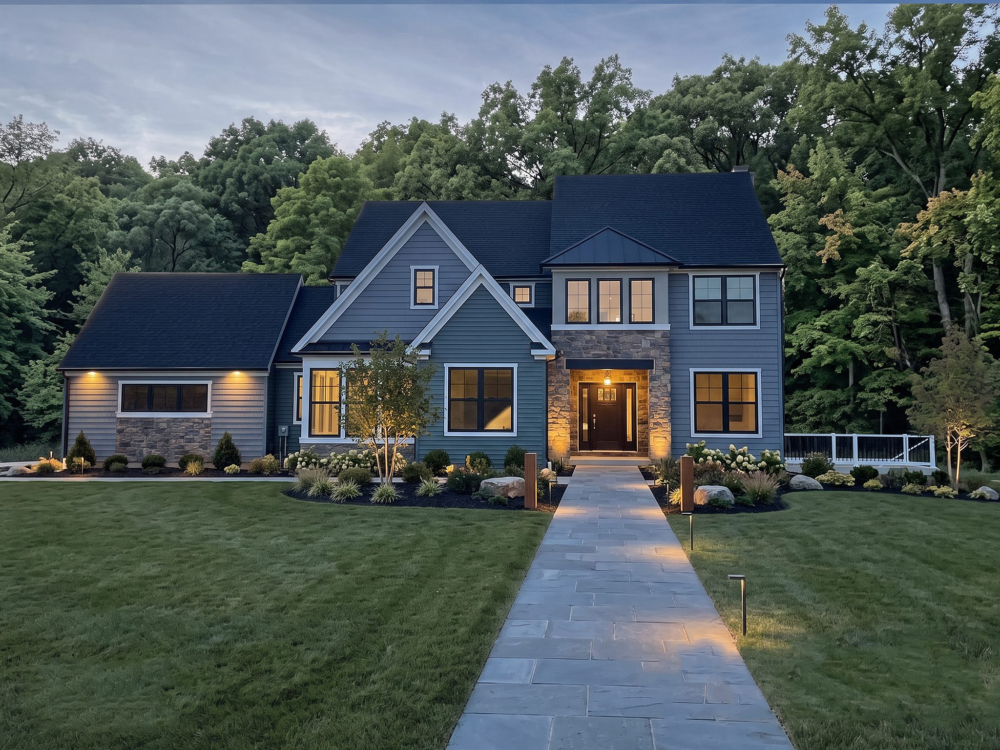
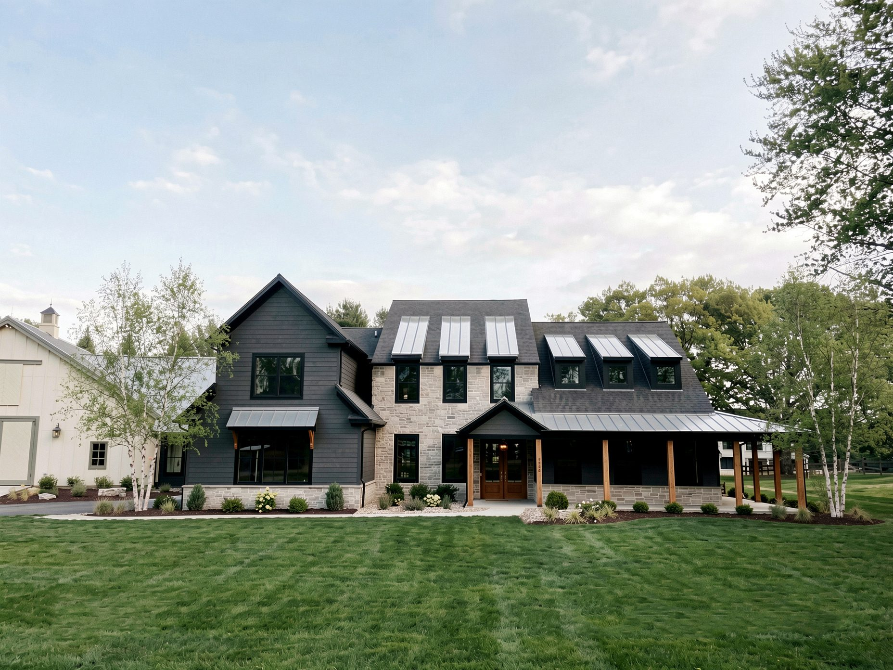

Portfolio
New Homes
Custom homes designed from a blank slate around the way you live.

The Still House · Berks County, PA
Blurring the line between architecture and nature

The Gallery House · Delaware County, PA
Designed to show off.

The Lightbox · Bucks County, PA
Function meets individuality.

The Connection · Montgomery County, PA
Distinguishing the joint, preserving the vision.

The Hideout · Berks County, PA
Illuminating the slope.